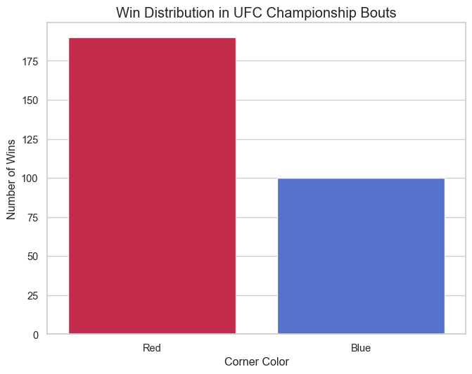

This dataset contains information on UFC fights that had a champion participating. This dataset is 4 years old so what I would like to do is create a model, perhaps a simple one, that will be used to predict championship title matches that have happened since and upcoming bouts. To challenge myself further I wil try to make USEFUL vizualizations and will be using python to throughout this project including using new packages such as matplotlib, seaborn and plotly (I have minimial experience with pandas).
First lets load in these packages and our UFC dataset from kaggle and take a look at some of the first rows of the dataset
import osimport pandas as pdbase_dir = os.path.dirname(os.path.abspath("__file__"))data_path = os.path.join(base_dir, "..", "data", "ufc_champs_final.csv")ufc = pd.read_csv(data_path)import matplotlib.pyplot as pltimport seaborn as snsimport plotly.express as pxfrom sklearn.model_selection import train_test_splitfrom sklearn.linear_model import LogisticRegressionfrom sklearn.metrics import accuracy_score, classification_reportprint(ufc.head())
Unnamed: 0 weightclass R_fighter B_fighter R_odds B_odds \
0 0 Flyweight Demetrious Johnson Henry Cejudo -470.0 375
1 1 Flyweight Demetrious Johnson Ray Borg -1000.0 650
2 2 Flyweight Demetrious Johnson Wilson Reis -1100.0 700
3 3 Flyweight Demetrious Johnson Tim Elliott -900.0 600
4 4 Flyweight Demetrious Johnson Henry Cejudo -340.0 280
R_ev B_ev date location ... \
0 21.276596 375.0 8/4/2018 Los Angeles, California, USA ...
1 10.000000 650.0 10/7/2017 Las Vegas, Nevada, USA ...
2 9.090909 700.0 4/15/2017 Kansas City, Missouri, USA ...
3 11.111111 600.0 12/3/2016 Las Vegas, Nevada, USA ...
4 29.411765 280.0 4/23/2016 Las Vegas, Nevada, USA ...
finish_details finish_round finish_round_time total_fight_time_secs \
0 NaN 5.0 5:00 1500.0
1 Armbar 5.0 3:15 1395.0
2 Armbar 3.0 4:49 889.0
3 NaN 5.0 5:00 1500.0
4 Knees 1.0 2:49 169.0
r_dec_odds b_dec_odds r_sub_odds b_sub_odds r_ko_odds b_ko_odds
0 215.0 715.0 180.0 1845.0 300.0 800.0
1 170.0 1800.0 180.0 1400.0 215.0 1700.0
2 105.0 1200.0 500.0 800.0 155.0 2000.0
3 150.0 1400.0 185.0 2000.0 259.0 1600.0
4 109.0 400.0 410.0 2400.0 445.0 1340.0
[5 rows x 121 columns]
As we can see there are a 121 variables so we need to consider whether there are variables that are unnecessary for our purposes such as significant strikes as we are going to use our model to try and predict future title bouts and until the bout is over we do not know these quantites. First lets take a look at the counts of NAs in each variable in descending order, this is implemented in the following code chunk:
As we can see there are numerous variables that have considerable missing data especially these columns defining one of the fighters respective rank during the dates of the bouts which makes sense as each fighter that is not a champion at the time of the respective bout will only have 1 rank in 1 weight class (out of 12). Notice we have a weightclass column so can we collapse the ranks into 1 column that gives their rank and we already would know their weightclass from the weightclass column. Luckily I just noticed there is a column that already does this so we can drop 24 variables, but if there was no column that did this we would be able to use python’s version of pivot longer with the melt function collapsing the columns into one after filtering them with some form of regular expression.
ufc_subset_drop = ufc.filter(regex="_rank")ufc_subset_drop = ufc_subset_drop.drop(columns = ["B_match_weightclass_rank", "R_match_weightclass_rank", "B_Pound-for-Pound_rank", "better_rank", "R_Pound-for-Pound_rank"]) ufc_subset_keep = [f for f in ufc if f notin ufc_subset_drop]#With the code above we have a subset that has selected the 24 columns of interest ufc_subset = ufc.melt(id_vars = ufc_subset_keep, value_cars = ufc_subset_keep, var_name ="weight_class_rank", value_name ="rank")
The code above is an implementation of using the melt function for the purpose stated above. Instead we can just drop the 24 variables as shown in the following code chunk. Now we have 97 variables.
97 variables is still a lot lets take a look to see if there are variables that will not be useful for out purposes, first lets take a look if there are variables that we will not be able to implement before the fight results. As we can see there are columns such as the round that the winner finished their opponent, the time of the finish, as well with the details of the finish.
Another step we can take to reduce the amount of variables for our model is to drop columns that cannot be quantified or add any sort of information for our model such as the date of the event, the row id, R_ev, and B_ev. I also misunderstood a column as I believed this dataset had a column for each fighter’s ethnicity or place of birth which would be important since we have information on where the fight was held which might reveal if home-field advantage is important but turns out there is only information where the fight is held not on the individual fighter’s place of birth or ethnicity and I do not think it is feasible to add every single fighters date of birth or ethnicity so I made the decision to drop these columns as they will only add noise.
There also seems to be redundant data (multicolinearity), for example we have information on the reach of both fighters, which is most likely important, but we also have a column dedicated to telling us the reach difference so it is easy to see the redundnacy, another example is the individual weights of the fighters as they fight at the same weight class so we know they are already at the same weight. I also find it important to notice that there might be data that seems redundant but there might be good reasons to keep the variable and in this dataset it corresponds to the individual ages of the fighters and the weight difference because for example the columns that has the weight difference treats all 5 year age differences the same which is not the case in athletic sports for instance there is a big difference between a 27 year old fighting a 32 year old (both in their physical primes) and a 32 year old fighting a 37 year old (one in his prime the other years outside their prime). In the following code cell I display all variables that contain “_dif” and from there I will make the decision whether to drop the “dif” column or the corresponding columns it is related to.
As we can see we are now at 57 variables and I was struggling what to do with all of these betting odds and after doing some research I believe that it would be more beneficial for me to take them out as I would like to base the model off of physicial attributes and past performence, and if I keep these betting odds this model can just become a reflection of those odds so in this next code cell I will remove them.
Now we are down to 49 columns and looking at a list of the columns I believe that there are no variables that need to be dropped. Something we now need to do is to decide whether or not to drop non-championship bouts so what I am going to do is create a copy of the dataset one that has only the championship fights and the other the total dataset up to this point. But first lets create a vizualization that shows us championship vs non-championship bouts.
sns.set_theme(style ="whitegrid")plt.figure(figsize = (8, 5))ax = sns.countplot(data = ufc, x ="title_bout", palette ="viridis")ax.set_xticklabels(['Non-Championship', 'Championship'])plt.title("non-title vs title fights")plt.xlabel("distribution of non-title vs title fights")plt.ylabel("number of fights")plt.show()
C:\Users\felip\AppData\Local\Temp\ipykernel_31712\1352250165.py:3: FutureWarning:
Passing `palette` without assigning `hue` is deprecated and will be removed in v0.14.0. Assign the `x` variable to `hue` and set `legend=False` for the same effect.
C:\Users\felip\AppData\Local\Temp\ipykernel_31712\1352250165.py:4: UserWarning:
set_ticklabels() should only be used with a fixed number of ticks, i.e. after set_ticks() or using a FixedLocator.

As we can see the majority of the data is Non-Championship data so for that reason I want to create two datasets as stated prior one that has all observations and the other only championship bouts.
Now we can fit a simple model first so I would like to start with a logistic regression model in which we first have to transform our variable that we are trying to predict (Winner) into 1s and 0s from “Red” and “Blue” respectfully. Since we are using a logistic regression model we can only use numeric predictors and cannot have and NaNs in the data set so we need to prep our data.
# ufc_clean_log = ufc_clean_champ_only.copy()# ufc_clean_log['target'] = ufc_clean_champ_only['Winner'].map({'Red': 1, 'Blue': 0})# # the next line of code tells us the counts of NaNs in each column# print(ufc_clean_log.isna().sum())# features_log = ufc_clean_champ_only.select_dtypes(include=['number'])# features_log = features_log.columns[features_log.isna().sum() == 0].tolist()# model = ufc_clean_log[features_log + ['target']].dropna()# x = model[features_log]# y = model['target']# x_train, x_test, y_train, y_test = train_test_split(x, y, test_size=0.2, random_state=42)# model_fit = LogisticRegression()# model_fit.fit(x_train, y_train)# y_preds = model_fit.predict(x_test)# print(accuracy_score(y_test, y_preds))ufc_clean_log = ufc_clean_champ_only.copy() ufc_clean_log['target'] = ufc_clean_log['Winner'].map({'Red': 1, 'Blue': 0})features_log = ufc_clean_log.select_dtypes(include=['number'])features_log = [col for col in features_log.columns if ufc_clean_log[col].isna().sum() ==0and col !='target']model_df = ufc_clean_log[features_log + ['target']].dropna()x = model_df[features_log]y = model_df['target']x_train, x_test, y_train, y_test = train_test_split(x, y, test_size=0.2, random_state=42)model_fit = LogisticRegression(max_iter=1000) model_fit.fit(x_train, y_train)y_preds = model_fit.predict(x_test)print(f"Accuracy: {accuracy_score(y_test, y_preds):.2%}")
Accuracy: 70.69%
C:\Users\felip\AppData\Local\Programs\Python\Python312\Lib\site-packages\sklearn\linear_model\_logistic.py:406: ConvergenceWarning:
lbfgs failed to converge after 1000 iteration(s) (status=1):
STOP: TOTAL NO. OF ITERATIONS REACHED LIMIT
Increase the number of iterations to improve the convergence (max_iter=1000).
You might also want to scale the data as shown in:
https://scikit-learn.org/stable/modules/preprocessing.html
Please also refer to the documentation for alternative solver options:
https://scikit-learn.org/stable/modules/linear_model.html#logistic-regression